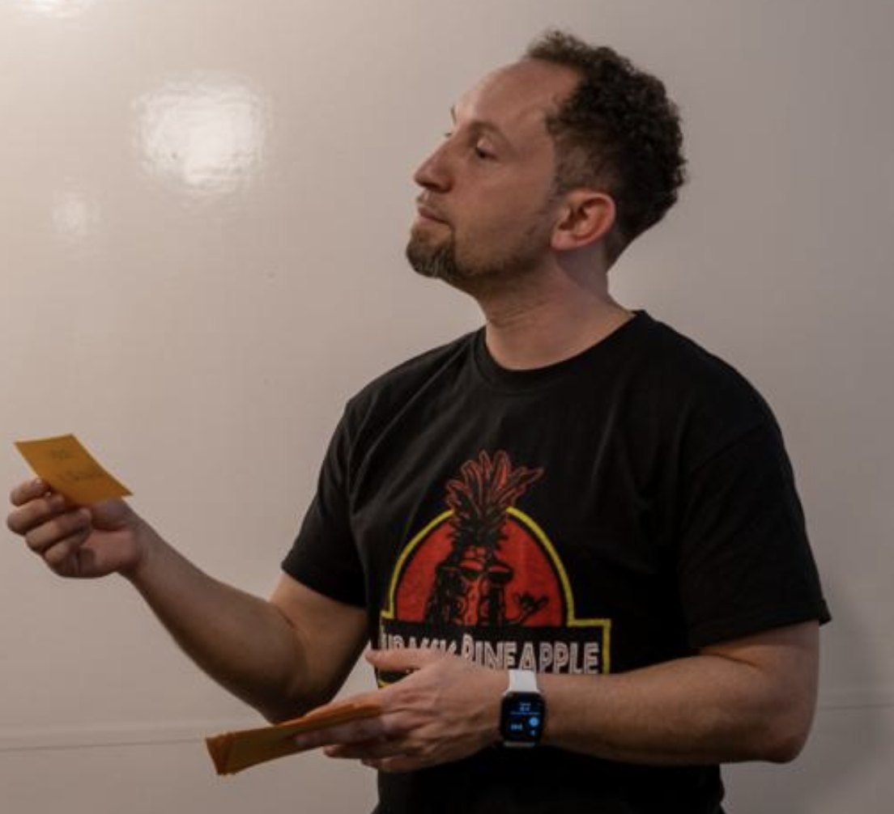

Take a sneak peek behind some of the craftsmanship of facilitating and being a product manager. Join me in the learning process by trying out exercises to solve problems.
Card Against Uncertainty(A risk mitigation exercise)Author: Roger Reyes,
5 Nov 2018
Why did we do this?
We created a fun game show type exercise that captured our levels of uncertainty for each dependency against each step in our path to production. Taking inspiration from the popular adult card game "Cards Against Humanity", we named our game "Cards Against Uncertainty." Following a similar format to our IPM (Iteration Planning Meeting), we gave each engineer a deck of cards, to help prevent last minute pointing changes. We used our IPM standards because the whole team already understood the parameters of this type of exercise. The pointing scaled from zero which mean no uncertainty, to three points declaring lots of uncertainty. The PMs build a spreadsheet matrix that captured each step to production in our path, cross examined with each of our current dependencies. Before starting the game, we defined a threshold to which we would perform some action. In our situation that action was to pursue a non-dependency solution. There was an organic conversation facilitated by each pointing scenario around the risk and uncertainty of utilizing each dependency. We use a prompt to help guide the conversation:What did we do?"To what extent does [integration] introduce uncertainty to the team around completing [production milestone]."
If you remember last week, we confirmed that our "finish line" was not static indeed. The PMs were visiting Tatte coffee shop talking about the risks around our team having a case of the OMTS (One More Thing Syndrome; there was always 'one more thing' to do before we could go to production). We felt that there were varied levels of uncertainty around the dependencies in place, both from an implementation to the rolling out of the Kessel Run platform. We decided to capture the uncertainty with this game show exercise.
What did we learn?
Although we intended to capture the uncertainty around dependencies, we gained a lot more from the team besides a path forward with or without the risky dependencies. The whole Arc team had the discussion and made the decision to build a leaner version of Arc. Framing this as a game helped facilitate a serious conversation with possibly heavy opinions. This format allowed members to detach their own biases and gained a greater objective perspective in a fun, light-hearted environment. Discussing our assumptions, we highlighted and uncovered additional risks not previously captured. For example, the team wasn't aware of the separate risks around moving from non-prod to production with our successful installation of our mapping service.